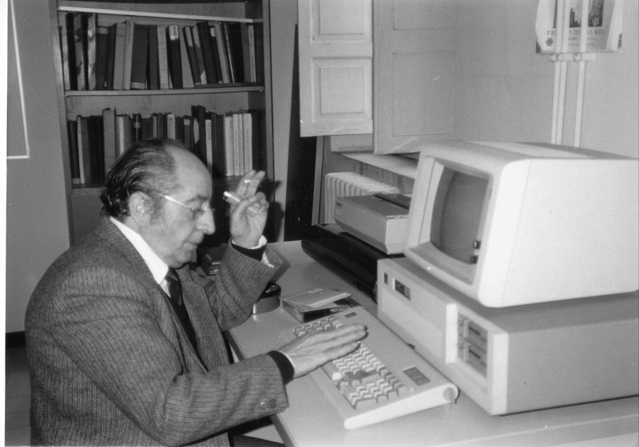
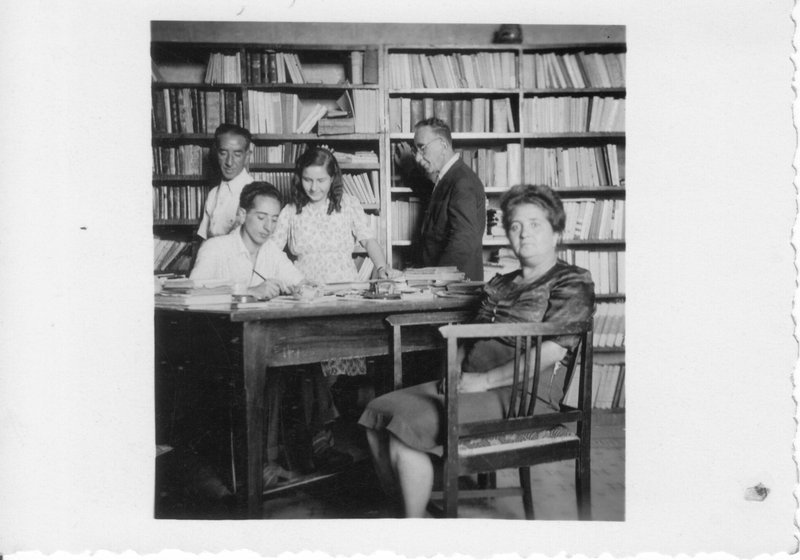
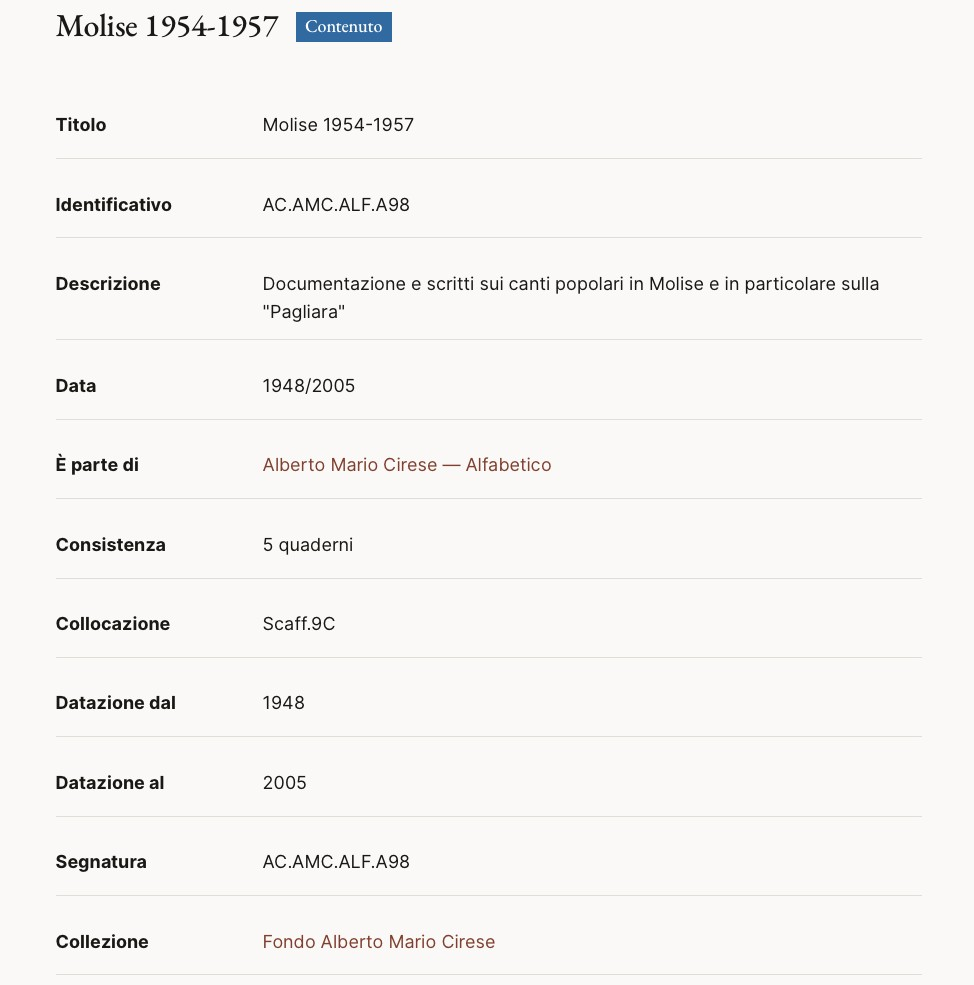

The family fondi of folklorist Eugenio Cirese, anthropologist Alberto Mario Cirese, and teacher Aida Ruscitti: over 3,000 units of correspondence, manuscripts, and photographs, spanning 1898–2006, held at the Istituto Centrale per il Patrimonio Immateriale (ICPI) in Rome.
The archive originates with Eugenio Cirese, who systematically preserved his own correspondence and the manuscripts of his poetic and folkloristic works. On his death in 1955, his son Alberto Mario Cirese took over its care, expanding it considerably over the course of his own academic career. The papers of Aida Ruscitti — Eugenio’s wife and an elementary school teacher — are an integral part of the fondo, documenting both her own life and the family context in which Alberto Mario grew up.
The fondo was transferred to the Istituto Centrale per il Patrimonio Immateriale (ICPI) in 2021, as part of a broader initiative to enhance archival heritage connected to the ethno-anthropological disciplines. Inventorying followed the international DACS and ISAD(G) standards, to make the materials accessible to researchers and the public alike.
Anthropologist and folklorist (1921–2011), among the most important of twentieth-century Italy. His Cultura egemonica e culture subalterne (1973) is a foundational text of modern Italian demology. The fondo is organised into six series: Carteggio (30 boxes, 1,337 folders), documenting over fifty years of correspondence with intellectuals, publishers, folklorists, and anthropologists worldwide — including Italo Calvino and Claude Lévi-Strauss; Numerico (113 boxes, 299 folders) and Alfabetico (192 boxes, 170 folders), study materials and thematic subject files; and the Lettori, Convegni, and Miscellanea Scritti series (72 boxes), documenting his public activity and scholarly essays.
Molisan dialect poet and folklorist (1884–1955), trained as an elementary school teacher. His major work, Lucecabelle (1951), is a classic of Italian dialect poetry; as a folklorist he published pioneering studies of popular traditions and co-founded and directed, with his son Alberto Mario, the journal La Lapa (1953). His letters, preserved in four folders, document exchanges with major Italian and European intellectuals including Benedetto Croce, Leonardo Sciascia, Arnold Van Gennep, and Paolo Toschi. The fondo is organised into three series: Numerico (65 folders, 272 envelopes), Carteggio (4 folders, 321 envelopes), and Versi (4 folders, 103 items).
Elementary school teacher (1894–1993), wife of Eugenio Cirese, who dedicated her professional life to teaching in the elementary schools of Rieti, L’Aquila, and Campobasso. The fondo comprises letters, school documents, work materials, and a significant collection of family correspondence, alongside personal photographs and postcards. Reference: AC.AR.
I managed the pilot project for the fondo’s preservation and digital access: preservation planning and collection management; metadata and finding-aid creation in ArchiveSpace following DACS and ISAD(G) standards; and implementation of the public-access portal on Omeka S, making the three fondi and their series browsable online.



✎ Have more photographs to add? Send them over and I'll fold them in here.